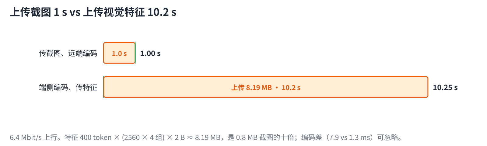
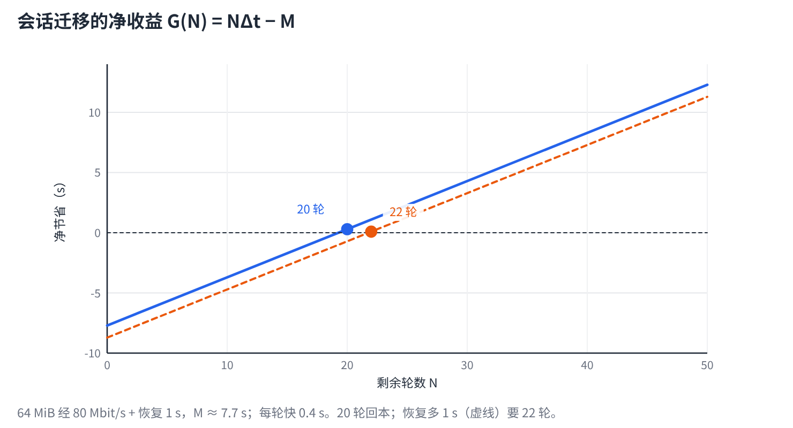
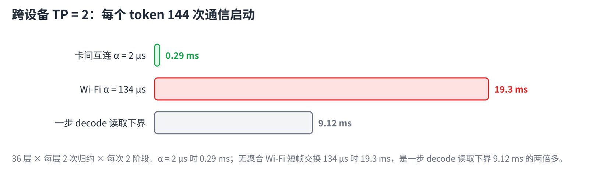
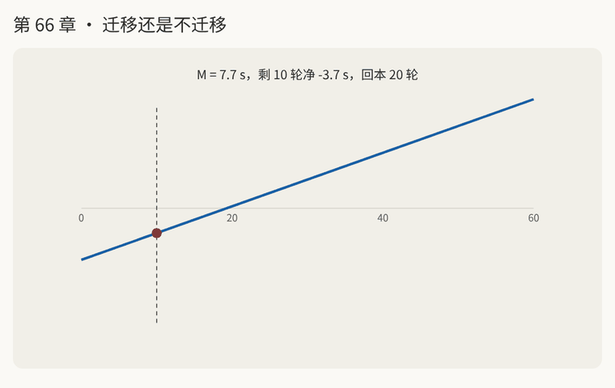

第 66 章 · 跨设备分工与会话迁移：传图片、传特征，还是传状态
本地运行
git clone https://github.com/wikieden/ai-infra-from-constraints
cd ai-infra-from-constraints/code/notebooks
pip install jupyterlab torch numpy
jupyter lab ch66_cross_device.ipynb也可以下载后直接用 VS Code 打开 .ipynb 运行。需要 GPU 的章节在 Colab 里选「代码执行程序 → 更改运行时类型 → GPU」。
本章回答：截图先在端侧编码成视觉特征再上传，为什么反而比传原图慢 9 秒？什么时候在另一台机器上编码才划算？会话迁移到更快的设备，还剩多少轮才回本？两台设备经 Wi-Fi 做张量并行，为什么单是启动通信就比一步 decode 还长？
讲解日期：2026-11-24 · 上一章：第 65 章 从模型运行时间到完整交互时间 · 下一章：第 67 章 广域网、无线与部署选择
对应原文：materials/ai-infra-book/manuscripts/12-端边云协同.md§12.2 L202–L314（图 12-10 至 12-16）
本章缩写：EC = Encoder Cache（编码器 / 缓存）· DeepStack（把视觉特征多组注入语言模型不同层的结构）· TP = Tensor Parallelism（张量 / 并行）· KV = Key–Value（键 / 值）。全部缩写见 缩写与术语表
讲解
第一步：传图片还是传特征（2026-11-24）
类比：寄压缩包还是寄解压后的文件夹。 压缩包小、到了还得解压；文件夹不用解压，但大十倍。端侧先算了，并不保证要传的东西变少。
原文 §12.2.1–§12.2.2 L204–L256：图片压缩是为了紧凑存储，视觉编码器的输出是为了后续计算——前者小，后者大。
例：Qwen3-VL-4B 把 640 × 640 的截图变成 400 个视觉 token，每个最终投影 2560 维，另有三组同宽 DeepStack 特征，四组都要送进语言模型：
是 0.8 MB 截图的约十倍；6.4 Mbit/s 上行时，发送从 1 s 变成约 10.2 s。
编码一张图 1.31 TFLOPs：端侧 RTX 4090 约 7.9 ms，远端 H100 约 1.3 ms。\(\Delta T \approx 9.25\) s > 0，端侧编码在计算和传输上都更慢。

图 66-1 · 两种方案后续的语言模型计算相同，比较只看编码时间和发送时间。
- 同机房两台服务器经 400 Gbit/s（每方向 50 GB/s）相连，图片与特征的发送差只有约 0.15 ms，编码与排队省 0.15 ms 以上就值得在另一台机器上编码。链路越快，传大东西的代价越小。
- 多轮任务里同一张图再出现，EC 命中就省一次编码。三种重算起点：图片 0.8 MB、视觉特征 7.8 MiB、400 个视觉 token 的语言 KV 约 56 MiB——越接近最终输出，命中省的计算越多，要存要传的也越多。
一句话：先比传输量，再比编码时间；慢链路上传原图几乎总是赢。
第二步：会话迁移的回本轮数（2026-11-24）
类比：搬到离公司近的房子。 搬家要花一天，之后每天通勤省半小时；还要住很久才值得搬。
原文 §12.2.3 L257–L288：迁移准备 \(M\)，新设备每轮省 \(\Delta t\)，还剩 \(N\) 轮：
例：64 MiB 状态经 80 Mbit/s 传过去，再花 1 s 恢复：
| 剩余轮数（每轮快 0.4 s） | 净收益 |
|---|---|
| 10 | −3.7 s |
| 20 | +0.3 s（回本轮数） |
| 40 | +8.3 s |
恢复再多 1 s，回本轮数变成 22。

图 66-2 · 同一次迁移对短任务不划算，对长会话值得；平台要预测剩余会话长度。
- 新设备不仅要载入缓存，还要知道做到哪一步：语言 KV 绑定模型、前缀和位置；截图 Agent 的进度由已执行的操作决定——点击已经改了界面，即使应答丢了也要恢复到点击后。靠操作编号和提交记录。
- 连接预热、图编译、模型加载都能用 \(N\Delta t - M\) 判断。
一句话：一次性的准备 M，要靠每轮的节省 Δt 摊回来。
第三步：模型内部切分，启动次数由结构定（2026-11-24）
类比：两个人合写一本书，每写一段都要打电话对一下。 电话再短，打得多也受不了。
原文 §12.2.4 L289–L314：36 层 Qwen3-8B 在两台设备上做 TP = 2，每层注意力输出和 FFN 输出各一次归约，每次两阶段（ReduceScatter + AllGather）：
| 连接 | 每阶段启动 α | 每个 token 的启动 |
|---|---|---|
| 卡间互连 | 2 μs | 0.29 ms |
| 无聚合的 54 Mbit/s Wi-Fi（一次短帧交换） | 134 μs | 19.3 ms |
后者是 RTX PRO 6000 一步 decode 读取下界（9.12 ms）的两倍多。下一层要本层归约结果，下一个 token 要当前 token 的输出，这些启动都在关键路径上。

图 66-3 · 流水线并行只在相邻阶段间传一次激活，通信次数少，适合跨设备；张量并行要每层同步。
场景代码：vLLM 编码器缓存与多模态输入的真实写法——同一张图重复出现时可以复用编码结果（真实 API；缓存行为随版本变化）：
from vllm import LLM
llm = LLM(model="Qwen/Qwen3-VL-4B-Instruct", limit_mm_per_prompt={"image": 1})
out = llm.generate({"prompt": "<|vision_start|><|image_pad|><|vision_end|>下一步点哪里？",
"multi_modal_data": {"image": screenshot}}) # 端侧只传截图，编码在服务端
一句话：跨慢链路切模型，先数一个 token 要同步几次。
动画演示：迁移还是不迁移

可交互版：animations/66-cross-device.html（滑块：状态 8–256 MiB；链路 10–400 Mbit/s；恢复 0–5 s；每轮节省 0.1–1 s；剩余 0–60 轮）。
怎么看：
- 斜线是 \(G(N) = N\Delta t - M\)，零线以上才划算（第二步）；
- 竖线是当前剩余轮数，右上角是 M 和回本轮数；
- 播放：64 MiB / 80 Mbit/s 剩 10 轮（亏）→ 20 轮（刚回本）→ 40 轮 → 恢复多 1 s → 链路 400 Mbit/s。
练习与作答记录
题 1（第一步）：特征改成只传最终投影（2560 维），400 个 token、BF16。多少字节？6.4 Mbit/s 下和传 0.8 MB 截图比如何？只传这一组会有什么问题？
作答记录：（待作答）
题 2（第二步）：状态 200 MiB、链路 100 Mbit/s、恢复 2 s、每轮快 0.5 s。至少还剩几轮才值得迁移？
作答记录：（待作答）
题 3（第三步）：一个 48 层模型做 TP = 4，每层两次归约、每次两阶段，α = 50 μs。一个 token 的启动开销多少？
作答记录：（待作答）
口诀
压缩包小要解压，文件夹大不用解，慢路上寄压缩包；
搬家花一天，每天省半小时，住够久才值；
合写书每段都打电话，电话再短也受不了。
本章复习卡片
I218（视觉特征 400 × 10240 × 2 ≈ 8.19 MB 是截图十倍；ΔT = T_E,l − T_E,r + T_x + (S_E − S_I)/B_u ≈ +9.25 s；50 GB/s 时只差 0.15 ms）、I219（G(N) = NΔt − M：64 MiB / 80 Mbit/s + 1 s → M 7.7 s、20 轮回本、恢复多 1 s 要 22 轮；TP = 2 跨 Wi-Fi 144α = 19.3 ms）。练习做完后，按答错、卡住的地方再补。
附录 · 延伸阅读
留给以后深入学习用，不影响本章主线。★ 是建议先读的。
推荐阅读
| 读什么 | 读哪里 | 读它为了什么 |
|---|---|---|
| ★ AII 第 12 章 | §12.2 L202–L314 | 本章原文 |
| Qwen3-VL 技术报告 | DeepStack | 特征为什么是四组 |
| 第 16 章 多模态与实时交互 | 图片在三站的大小 | 前置 |
| 第 52 章 Attention–FFN 分离 | 逐层交接与 α* | 同一类启动账 |
| 第 55 章 扩缩容与故障恢复 | 后台迁移 | 推理侧的迁移 |
数学原理
- 差值比较：两方案共同的部分相减抵消，只比不同的部分。
- 回本：一次性成本 ÷ 每轮节省 = 回本轮数。
- 启动次数：层数 × 每层同步次数 × 每次阶段数。
公式清单
| 公式 | 意思 |
|---|---|
| $S_E = $ token × 宽 × 组 × 字节 | 视觉特征大小 |
| \(\Delta T = T_{E,l} - T_{E,r} + T_x + (S_E - S_I)/B_u\) | 端侧编码 vs 远端编码 |
| \(G(N) = N\Delta t - M\) | 迁移收益 |
| \(T_{\mathrm{start}} = 144\alpha\) | TP = 2 的启动开销 |
代码对照：把本章的数字用代码算一遍
代码
ai-infra/solutions/chapter-code/ch66_cross_device.py，测试tests/test_ch66.py：
bash cd ai-infra/solutions/chapter-code uv run python ch66_cross_device.py uv run pytest tests/test_ch66.py
| 讲义 | 写法 | 跑出来 |
|---|---|---|
| 第一步 | feature_bytes()、encode_delta(...) |
8,192,000 B；+9.25 s |
| 第二步 | migrate_cost(...)、gain(n, 0.4, M)、breakeven_rounds(...) |
7.7 s；−3.7 / +0.3 / +8.3 s；20 / 22 轮 |
| 第三步 | tp_startup_ms(alpha_us=...) |
0.29 / 19.3 ms |
代码里才看得到的 3 件事：
feature_bytes的 10240 = 2560 × 4 组；只算最终投影会漏掉 DeepStack 的三组。- 400 个视觉 token 的语言 KV 按 147,456 B/token 是 56.25 MiB，原文写 56.3。
breakeven_rounds用未取整的 M（7.71 s），所以 19 轮还差一点，20 轮才回本。
自己改一改（不影响练习答案）：
- 给
encode_delta加 EC 命中率 h：多轮任务里只有未命中才要编码和传输。 - 用
gain找"每轮快 0.2 s"时的回本轮数。 - 把
tp_startup_ms改成流水线并行：每个 token 只在两阶段间传一次激活。